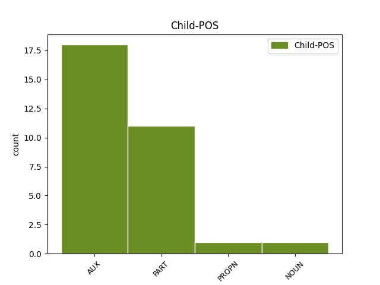

Distribution of features within this leaf

Agreement Rules sorted by frequency.
- When the dependent token is the conjunct(conj) of the head token, and the head token is AUX and the dependent token is AUX.
1 E _ _ _ _ 0 _ _ _
2 1992 _ _ _ _ 0 _ _ _
3 e _ _ _ _ 0 _ _ _
4 voe _ AUX _ Mood=Ind|Number=Sing|Person=3|Tense=Past|VerbForm=Fin 0 _ _ _
5 pedet _ _ _ _ 0 _ _ _
6 da _ _ _ _ 0 _ _ _
7 c'houel _ _ _ _ 0 _ _ _
8 an _ _ _ _ 0 _ _ _
9 transmusicales _ _ _ _ 0 _ _ _
10 e _ _ _ _ 0 _ _ _
11 Roazhon _ _ _ _ 0 _ _ _
12 ha haver AUX _ Mood=Ind|Number=Sing|Person=3|Tense=Pres|VerbForm=Fin 4 conj _ _
13 kanañ _ _ _ _ 0 _ _ _
14 a _ _ _ _ 0 _ _ _
15 reas _ _ _ _ 0 _ _ _
16 e _ _ _ _ 0 _ _ _
17 - _ _ _ _ 0 _ _ _
18 unan _ _ _ _ 0 _ _ _
19 a _ _ _ _ 0 _ _ _
20 capella _ _ _ _ 0 _ _ _
21 etre _ _ _ _ 0 _ _ _
22 ur _ _ _ _ 0 _ _ _
23 strollad _ _ _ _ 0 _ _ _
24 rock _ _ _ _ 0 _ _ _
25 hag _ _ _ _ 0 _ _ _
26 ur _ _ _ _ 0 _ _ _
27 strollad _ _ _ _ 0 _ _ _
28 rap _ _ _ _ 0 _ _ _
29 , _ _ _ _ 0 _ _ _
30 dirak _ _ _ _ 0 _ _ _
31 tud _ _ _ _ 0 _ _ _
32 n'anavezas _ _ _ _ 0 _ _ _
33 netra _ _ _ _ 0 _ _ _
34 diwar _ _ _ _ 0 _ _ _
35 - _ _ _ _ 0 _ _ _
36 benn _ _ _ _ 0 _ _ _
37 ar _ _ _ _ 0 _ _ _
38 c'han _ _ _ _ 0 _ _ _
39 e _ _ _ _ 0 _ _ _
40 brezhoneg _ _ _ _ 0 _ _ _
41 . _ _ _ _ 0 _ _ _
1 E _ _ _ _ 0 _ _ _
2 1908 _ _ _ _ 0 _ _ _
3 e e PART _ Mood=Ind|Number=Sing|Person=3|Polarity=Neg|VerbForm=Fin 0 _ _ _
4 oa _ _ _ _ 0 _ _ _
5 bet _ _ _ _ 0 _ _ _
6 savet _ _ _ _ 0 _ _ _
7 er _ _ _ _ 0 _ _ _
8 gêr _ _ _ _ 0 _ _ _
9 gant _ _ _ _ 0 _ _ _
10 ar _ _ _ _ 0 _ _ _
11 Vahaied _ _ _ _ 0 _ _ _
12 o _ _ _ _ 0 _ _ _
13 lec'h _ _ _ _ 0 _ _ _
14 - _ _ _ _ 0 _ _ _
15 pediñ _ _ _ _ 0 _ _ _
16 kentañ _ _ _ _ 0 _ _ _
17 met _ _ _ _ 0 _ _ _
18 damdistrujet _ _ _ _ 0 _ _ _
19 e e PART _ Mood=Ind|Number=Sing|Person=3|Polarity=Neg|VerbForm=Fin 3 conj _ _
20 oa _ _ _ _ 0 _ _ _
21 bet _ _ _ _ 0 _ _ _
22 gant _ _ _ _ 0 _ _ _
23 ur _ _ _ _ 0 _ _ _
24 c'hrenndouar _ _ _ _ 0 _ _ _
25 e _ _ _ _ 0 _ _ _
26 1948 _ _ _ _ 0 _ _ _
27 ha _ _ _ _ 0 _ _ _
28 peurdistrujet _ _ _ _ 0 _ _ _
29 dindan _ _ _ _ 0 _ _ _
30 ar _ _ _ _ 0 _ _ _
31 ren _ _ _ _ 0 _ _ _
32 soviedel _ _ _ _ 0 _ _ _
33 e _ _ _ _ 0 _ _ _
34 1963 _ _ _ _ 0 _ _ _
35 . _ _ _ _ 0 _ _ _
1 Muzulman _ _ _ _ 0 _ _ _
2 e e AUX _ Mood=Ind|Number=Sing|Person=3|Polarity=Neg|VerbForm=Fin 0 _ _ _
3 oa _ _ _ _ 0 _ _ _
4 , _ _ _ _ 0 _ _ _
5 eus _ _ _ _ 0 _ _ _
6 ar _ _ _ _ 0 _ _ _
7 boblad _ _ _ _ 0 _ _ _
8 Hui _ _ _ _ 0 _ _ _
9 ha _ _ _ _ 0 _ _ _
10 genidik _ _ _ _ 0 _ _ _
11 e e PART _ Mood=Ind|Number=Sing|Person=3|Polarity=Neg|VerbForm=Fin 2 conj _ _
12 oa _ _ _ _ 0 _ _ _
13 eus _ _ _ _ 0 _ _ _
14 proviñs _ _ _ _ 0 _ _ _
15 Yunnan _ _ _ _ 0 _ _ _
16 . _ _ _ _ 0 _ _ _
1 Sikour Sikour PROPN _ Case=Nom|Number=Sing|Person=3 0 _ _ _
2 degemeret _ _ _ _ 0 _ _ _
3 a _ _ _ _ 0 _ _ _
4 galon galon NOUN _ Case=Nom|Number=Sing|Person=3 1 conj _ _
5 . _ _ _ _ 0 _ _ _
1 Bolívar _ _ _ _ 0 _ _ _
2 a _ _ _ _ 0 _ _ _
3 yeas _ _ _ _ 0 _ _ _
4 da dar ADP _ Mood=Ind|Number=Sing|Person=3|Tense=Pres|VerbForm=Fin 0 _ _ _
5 Europa _ _ _ _ 0 _ _ _
6 en _ _ _ _ 0 _ _ _
7 - _ _ _ _ 0 _ _ _
8 dro _ _ _ _ 0 _ _ _
9 e _ _ _ _ 0 _ _ _
10 1804 _ _ _ _ 0 _ _ _
11 ha haver AUX _ Mood=Ind|Number=Sing|Person=3|Tense=Pres|VerbForm=Fin 4 conj _ _
12 daremprediñ _ _ _ _ 0 _ _ _
13 a _ _ _ _ 0 _ _ _
14 reas _ _ _ _ 0 _ _ _
15 lez _ _ _ _ 0 _ _ _
16 Napoleon _ _ _ _ 0 _ _ _
17 . _ _ _ _ 0 _ _ _
1 26 _ _ _ _ 0 _ _ _
2 . _ _ _ _ 0 _ _ _
3 Kalbajar Kalbajar PROPN _ Case=Nom|Number=Sing|Person=3 0 _ _ _
4 ( _ _ _ _ 0 _ _ _
5 Kəlbəcər _ _ _ _ 0 _ _ _
6 ) _ _ _ _ 0 _ _ _
7 ( _ _ _ _ 0 _ _ _
8 e _ _ _ _ 0 _ _ _
9 darn _ _ _ _ 0 _ _ _
10 e _ _ _ _ 0 _ _ _
11 Nagorno Nagorno PROPN _ Case=Nom|Number=Sing|Person=3 3 conj _ _
12 - _ _ _ _ 0 _ _ _
13 Karabakh _ _ _ _ 0 _ _ _
14 ) _ _ _ _ 0 _ _ _
Disagree Examples:
1 Da _ _ _ _ 0 _ _ _
2 skouer _ _ _ _ 0 _ _ _
3 , _ _ _ _ 0 _ _ _
4 urmurlivadur _ _ _ _ 0 _ _ _
5 a _ _ _ _ 0 _ _ _
6 ziskoueze _ _ _ _ 0 _ _ _
7 Priapus _ _ _ _ 0 _ _ _
8 , _ _ _ _ 0 _ _ _
9 doue _ _ _ _ 0 _ _ _
10 kozh _ _ _ _ 0 _ _ _
11 ar _ _ _ _ 0 _ _ _
12 vuhez _ _ _ _ 0 _ _ _
13 reizhel _ _ _ _ 0 _ _ _
14 hag _ _ _ _ 0 _ _ _
15 ar _ _ _ _ 0 _ _ _
16 speriusted _ _ _ _ 0 _ _ _
17 , _ _ _ _ 0 _ _ _
18 gant _ _ _ _ 0 _ _ _
19 e _ _ _ _ 0 _ _ _
20 bikol _ _ _ _ 0 _ _ _
21 mell _ _ _ _ 0 _ _ _
22 pich _ _ _ _ 0 _ _ _
23 , _ _ _ _ 0 _ _ _
24 a _ _ _ _ 0 _ _ _
25 oa _ AUX _ Number=Sing|Person=2 0 _ _ _
26 bet _ _ _ _ 0 _ _ _
27 goloet _ _ _ _ 0 _ _ _
28 a _ _ _ _ 0 _ _ _
29 blastr _ _ _ _ 0 _ _ _
30 ha _ _ _ _ 0 _ _ _
31 ne _ _ _ _ 0 _ _ _
32 voe _ AUX _ Mood=Ind|Number=Sing|Person=0|Tense=Past|VerbForm=Fin|Voice=Act 25 conj _ _
33 addizoloet _ _ _ _ 0 _ _ _
34 nemet _ _ _ _ 0 _ _ _
35 e _ _ _ _ 0 _ _ _
36 1998 _ _ _ _ 0 _ _ _
37 abalamour _ _ _ _ 0 _ _ _
38 d'ar _ _ _ _ 0 _ _ _
39 glav _ _ _ _ 0 _ _ _
40 . _ _ _ _ 0 _ _ _
1 Jedet _ _ _ _ 0 _ _ _
2 ez _ _ _ _ 0 _ _ _
3 eus eus AUX _ Number=Sing|Person=2 0 _ _ _
4 bet _ _ _ _ 0 _ _ _
5 dre _ _ _ _ 0 _ _ _
6 - _ _ _ _ 0 _ _ _
7 vras _ _ _ _ 0 _ _ _
8 e e PART _ Mood=Ind|Number=Sing|Person=3|Polarity=Neg|VerbForm=Fin 3 conj _ _
9 oa _ _ _ _ 0 _ _ _
10 bet _ _ _ _ 0 _ _ _
11 kollet _ _ _ _ 0 _ _ _
12 18 _ _ _ _ 0 _ _ _
13 miliard _ _ _ _ 0 _ _ _
14 a _ _ _ _ 0 _ _ _
15 euroioù _ _ _ _ 0 _ _ _
16 evit _ _ _ _ 0 _ _ _
17 a _ _ _ _ 0 _ _ _
18 sell _ _ _ _ 0 _ _ _
19 amerzh _ _ _ _ 0 _ _ _
20 ar _ _ _ _ 0 _ _ _
21 vro _ _ _ _ 0 _ _ _
22 . _ _ _ _ 0 _ _ _
1 Divizoù _ _ _ _ 0 _ _ _
2 sokial _ _ _ _ 0 _ _ _
3 en _ _ _ _ 0 _ _ _
4 doa _ AUX _ Number=Sing|Person=2 0 _ _ _
5 tapet _ _ _ _ 0 _ _ _
6 hag _ _ _ _ 0 _ _ _
7 enebet _ _ _ _ 0 _ _ _
8 e e PART _ Mood=Ind|Number=Sing|Person=3|Polarity=Neg|VerbForm=Fin 4 conj _ _
9 oa _ _ _ _ 0 _ _ _
10 bet _ _ _ _ 0 _ _ _
11 ouzh _ _ _ _ 0 _ _ _
12 SUA _ _ _ _ 0 _ _ _
13 . _ _ _ _ 0 _ _ _